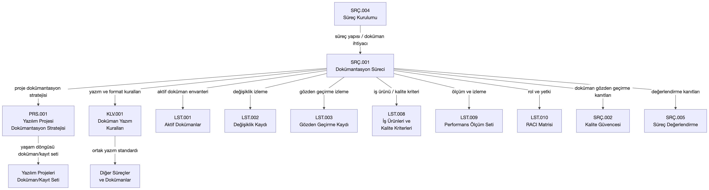

İÜC.BİDB.LST.007 - Süreç Etkileşim Matrisi (İÜC.BİDB.SRÇ.001)
1. Liste Özeti
| Alan | Değer |
|---|
| Liste Kodu ve Adı | İÜC.BİDB.LST.007 - Süreç Etkileşim Matrisi (İÜC.BİDB.SRÇ.001) |
| İlgili Süreç | İÜC.BİDB.SRÇ.001 - Dokümantasyon Süreci |
| Kullanım Amacı | Dokümantasyon Süreci’nin diğer süreç, prosedür, kılavuz, liste ve proje dokümantasyonu bileşenleriyle etkileşimini göstermek |
| Sorumlu | Levent BAYEZİT - Dokümantasyon Süreç Sahibi |
| Durum | Onaylı |
| Sürüm | v1.0 |
| Yürürlük Tarihi | 15-02-2025 |
| Son Gözden Geçirme Tarihi | 15-02-2025 |
2. Kullanım Değerleri
| Alan | Değer |
|---|
| Diyagram Kaynağı | Mermaid kodu |
| Görsel Çıktı | src001-surec-etkilesim.png |
| Etkileşim Kapsamı | SRÇ.001’in dokümantasyon yönetimi çıktıları ve bu çıktıların desteklediği süreç/dokümanlar |
| Kapsam Dışı | Tüm süreçlerin ayrıntılı operasyonel veri akışları |
| Güncelleme Sıklığı | Süreç mimarisi veya dokümantasyon yapısı değiştiğinde |
3. Süreç Etkileşim Diyagramı

4. Girdi Etkileşimleri Matrisi
| Kaynak Süreç / Kaynak | Etkileşim Türü | Girdi / Tetikleyici | Kayıt / Kanıt | Açıklama |
|---|
| İÜC.BİDB.SRÇ.004 - Süreç Kurulumu Süreci | Süreç yapısı / ihtiyaç | Süreç dokümantasyon ihtiyacı | Süreç tanımı ve ilgili alt kayıtlar | SRÇ.001, süreç dokümanlarının ve bağlı kayıtların ortak yönetim yaklaşımını sağlar. |
| Yazılım Projeleri | Proje dokümantasyon ihtiyacı | Proje yaşam döngüsünde oluşan doküman/kayıt gereksinimi | Jira / Confluence / Bitbucket / Bamboo / Drive kayıtları | PRS.001 aracılığıyla yazılım projeleri için özel stratejiye dönüştürülür. |
| İÜC.BİDB.SRÇ.002 - Kalite Güvencesi Süreci | Gözden geçirme girdisi | Doküman kalite gözden geçirme ihtiyacı | LST.003 ve ilgili gözden geçirme kayıtları | Kalite kontrolleri dokümantasyon kayıtlarına yansıtılır. |
| İÜC.BİDB.SRÇ.005 - Süreç Değerlendirme Süreci | Değerlendirme girdisi | Süreç doküman ve kayıt kanıtı ihtiyacı | FRM.001, LST.008, LST.009, LST.010 | Süreç değerlendirmelerinde kullanılacak dokümantasyon kanıtları SRÇ.001 çıktılarıyla desteklenir. |
5. Çıktı Etkileşimleri Matrisi
| Hedef Süreç / Hedef | Etkileşim Türü | Çıktı / Yönlendirme | Kayıt / Kanıt | Açıklama |
|---|
| İÜC.BİDB.PRS.001 - Yazılım Projeleri Dokümantasyon Prosedürü | Prosedür yönlendirmesi | Yazılım projeleri dokümantasyon stratejisi | PRS.001 | SRÇ.001’in genel dokümantasyon yaklaşımı yazılım projelerine özel hale getirilir. |
| İÜC.BİDB.KLV.001 - Doküman Yazım Kuralları Talimatı | Kılavuz / talimat | Doküman yazım, başlık, tablo, sürüm ve yayın kuralları | KLV.001 | Tüm doküman türleri için ortak yazım standardı sağlar. |
| İÜC.BİDB.LST.001 - Aktif Dokümanlar Listesi | Envanter çıktısı | Genel aktif doküman envanteri | LST.001 | Genel kullanıma açık dokümanların güncel durumunu izler. |
| İÜC.BİDB.LST.002 - Doküman Değişiklik Kaydı | Değişiklik izleme | Doküman değişikliklerinin kaydı | LST.002 | Doküman değişikliklerinin izlenebilirliğini destekler. |
| İÜC.BİDB.LST.003 - Doküman Gözden Geçirme Kaydı | Gözden geçirme izleme | Doküman gözden geçirme kayıtları | LST.003 | Doküman kontrolleri ve onay öncesi değerlendirmeleri izler. |
| SRÇ.001 alt kayıtları | Süreç kanıtı | LST.008, LST.009, LST.010 ve FRM.001 | İlgili süreç alt kayıtları | SRÇ.001’in iş ürünü, ölçüm, RACI ve gözden geçirme kanıtlarını sağlar. |
| Diğer süreç dokümanları | Ortak dokümantasyon yapısı | Şablon, yazım kuralı ve kayıt yönetimi yaklaşımı | Şablonlar ve ilgili süreç kayıtları | Tüm süreçlerin tutarlı doküman yapısında hazırlanmasını destekler. |
6. Etkileşim Notları
SRÇ.001, diğer süreçlerin operasyonel akışını tekrar tanımlamaz. Bu matris yalnızca dokümantasyon yönetimi açısından oluşan girdi, çıktı, kayıt ve yönlendirme etkileşimlerini gösterir.
PRS.001 ve KLV.001, SRÇ.001’in uzantısı niteliğindedir. PRS.001 yazılım projeleri özelinde stratejiyi; KLV.001 ise dokümanların yazım ve biçim kurallarını tanımlar.
7. Sürüm Geçmişi
| Sürüm | Tarih | Açıklama | Hazırlayan/Güncelleyen | Gözden Geçiren | Onay |
|---|
| v0.1 | 01-02-2025 | İlk taslak oluşturuldu. | Soner DEDEOĞLU - Kalite Danışmanı | Levent BAYEZİT - Dokümantasyon Süreç Sahibi | - |
| v1.0 | 15-02-2025 | Matris onaylanarak yürürlüğe alındı. | Soner DEDEOĞLU - Kalite Danışmanı | Levent BAYEZİT - Dokümantasyon Süreç Sahibi | Mustafa Nusret SARISAKAL - Bilgi İşlem Daire Başkanı |